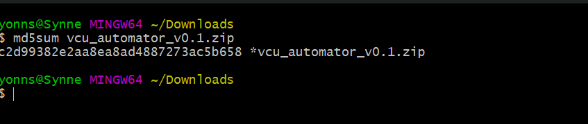
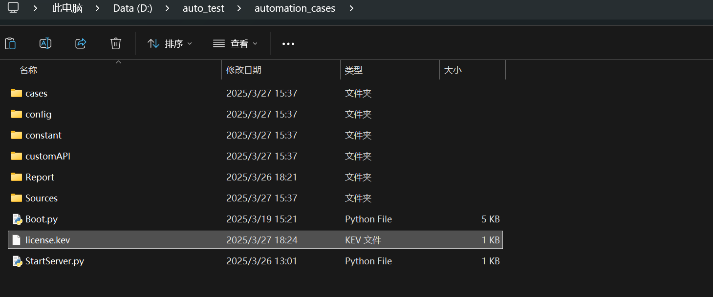
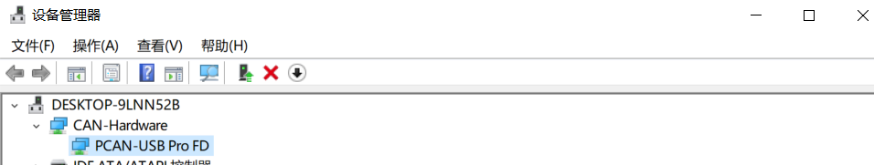
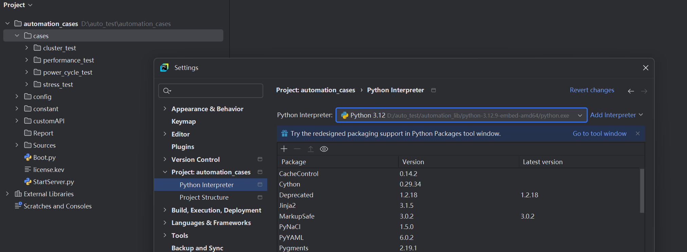

<!DOCTYPE html>
<html lang="en">
<head>
    <meta charset="UTF-8">
    <title>Overview</title>
</head>
<body>

</body>
</html><!DOCTYPE html>
<html lang="en">
<head>
  <title>本地部署流程详情</title>
  <!--    <link rel="icon" type="image/x-ico" href="./icon-8.png" />-->
  <link rel="stylesheet" type="text/css" href="../css/overview.css" />
  <link rel="stylesheet" type="text/css" href="../css/animate.css" />
  <link rel="stylesheet" type="text/css" href="../css/elementui-index.css" />
  <!-- <link rel="stylesheet" type="text/css" href="https://unpkg.com/animate.css@3.5.2/animate.min.css" /> -->
</head>
<body>


<div id="overview">

  <div class="app-header">
    <div class="app-header-homepagetitle">
                <span class="header-nav">
                    <a id="back_homepage"><span>Homepage</span></a>
                    <a href="../html/overview.html" style="background-color: #f6c00e;"><span>Overview</span></a>
                    <a href="../html/api.html"><span>API</span></a>


                  <!--                    <li><a href="./html/overview.html">Overview</a></li>-->
                  <!--                    <li><a href="./html/api.html">API Doc</a></li>-->

                </span>
    </div>

  </div>

  <div class="functions">
    <h1>功能介绍</h1>
    <div class="function-description">
      <p><strong>1. cluster</strong>:
        工具通过解析不同车型和平台的arxml文件中的报文，可以实现can报文的发送、接收、停发、报文录制和对手件模拟的业务
        我们提供了cluster table给用户提供了仪表各模块的信号封装，可以使用MessageSender来按需调用，这些table都在customAPI中定义；同时，customLib中也提供了多种cluster manager来提供cluster业务的接口封装，如ClusterGeneralManager
        另外，我们使用C/S架构来实现canbus消息处理，用户可以直接使用CanBusClient类来显示地发送和接收指定的报文信号。
      </p>
      <p><strong>2. uiautomator</strong>:
        我们基于uiautomator2开源库，设计了一套基于mpv模式的UI自动化模板，独立封装了presenter、page、locator、model类，来适配所有车型的UI自动化；uiautomator的业务实现在customAPI中定义，底层可以调用customLib/uiautomator中的接口来实现模拟
      </p>
      <p><strong>3. log</strong>:
        用户可以使用customLib/loggers下封装的类来抓取VCU日志，Common日志包括了slog，gmlog，dlt，serail日志等；Feature日志主要包括了Audio日志、蓝牙日志、Carplay日志、语音导航日志等；System日志包括了minidump，guestdump，emtrace, coredump等
      </p>
      <p><strong>4. performance</strong>:
        主要提供了性能的专项测试，包括冷暖热启动，帧率测试，多场景性能测试；我们在customLib/performance中提供了抓取性能数据的模板类BaseSenarioRunner以及数据统计的脚本，用户可以在自定义的case脚本中继承这个类来实现自定义场景的性能抓取和数据统计
      </p>
      <p><strong>5. 其他</strong>：
        我们还在customLib的audio、opencv、common目录中提供了音频处理、图片处理、远程指令执行、文件操作等通用接口，具体可以参考我们提供的模块API接口文档
      </p>

    </div>

  </div>


  <div id="guidance-container">


    <h1>部署流程</h1>

    <div class="steps_containter">
      <div class="steps">
        <h5>1. 下载自动化解决方案软件包</h5>
        <ul>
          <li><a style="" href="https://peedp.saic-gm.com/ccm/web/projects/VCS_Info4.0_High_Platform_PATAC_RTC#action=com.ibm.team.scm.browseElement&workspaceItemId=_ewzjAL8DEemrVdX-kVROUQ&componentItemId=_eMVJwO8jEemB8pkZYRolcA&itemType=com.ibm.team.scm.Folder&itemId=_25FM8P5WEe-imMtnq71XVQ">
            <span class="link" style="color: blue;">从RTC上下载最新版本的工具包到本地PC</span></a>
          </li>
          </img>
          <li>确认文件的md5sum值与首页中展示的一致</li>
          </img>
        </ul>

        <h5>2. 解压到指定目录</h5>
        <ul>
          <li>在D盘或E盘根目录下创建一个文件夹: <strong style="color: #2980b9">auto_test</strong> (此目录今后将作为自动化测试的根目录)</li>
          <li>将下载好的软件压缩包文件解压到刚刚创建好的 <strong style="color: #2980b9">auto_test</strong> 文件夹内</li>
          <li>进入 <strong style="color: #2980b9">auto_test</strong>, 检查文件内容, 文件夹: <strong>automation_cases</strong>, 文件夹: <strong>automation_lib</strong>, 文件: <strong>lisence.bat</strong></li>
          </img>
        </ul>

        <h5>3. 配置python/adb环境变量 & 生成注册编号</h5>
        <ul>
          <li>双击lisence.bat文件，至执行完成</li>
          <li>确认当前目录下有新的注册编号文件生成</li>
          </img>
          <li>可在Windows cmd窗口中使用 <code> where python</code> , <code> where pip</code>, <code> where adb</code> 这3条指令确认python,pip,adb已经正确加入环境变量</li>
        </ul>

        <h5>4. 申请证书文件</h5>
        <ul>
          <li>将 <strong style="color: black">#3</strong> 中生成的注册编号文件发送给VCU软件测试团队License管理员 @Li Zhao, @Cheng Jie 生成证书文件license.key</li>

        </ul>

        <h5>5. 将证书文件放置到正确位置</h5>
        <ul>
          <li>将生成的证书文件license.key放置在 <strong style="color: #2980b9">D:\auto_test\automation_cases\</strong> 目录下</li>
          </img>

        </ul>

        <h5>6. 安装Git，配置环境变量 (若曾经完成，跳过)</h5>
        <ul>
          <li><a style="" href="https://git-scm.com">
            <span class="link" style="color: blue;">下载Git并安装</span></a>
          </li>
          <li>假如安装在D:\application\Git\目录下，将 <strong>D:\application\Git\bin</strong>  加入系统环境变量</li>

        </ul>

        <h5>7. PC连接好PCAN硬件， 配置驱动</h5>
        <ul>
          <li>将PCAN硬件一端连接PC，另一端连接VCU侧ICAN</li>
          <li>安装PCAN硬件的驱动软件包，在设备管理器中确认PCAN设备驱动正常</li>
          </img>

        </ul>


        <h5>8. 在PyCharm中打开automation_cases工程文件夹，配置python解释器路径</h5>
        <ul>
          <li>在PyCharm中选择 automation_cases 文件夹并打开</li>
          <li>在PyCharm中 File > Settings > Python Intepreter 中设置已存在的解释器路径: <strong style="color: red">D:\auto_test\automation_lib\python-3.12.9-embed-amd64\python.exe</strong> </li>
          </img>

        </ul>

        <h5>9. PC电脑连接网络</h5>
        <ul>
        </ul>

        <h5>10. 配置Config.json配置文件中关于台架VCU车型参数</h5>
        <ul>
          <li>打开 automation_cases/config/Config.json 配置文件，正确设置与当前台架匹配的 <strong> BENCH_INFO, PROJECT, MODEL_YEAR, VEHICLE_PROPULSION_TYPE </strong> 必要配置的属性值</li>
          <pre><code style="color: blue; font-weight: bolder;font-size: 1.2rem;">
"BENCH_INFO": "CLEA-15",
"PROJECT": "L232",
"MODEL_YEAR": "MY25",
"VEHICLE_PROPULSION_TYPE": "BEV",</code></pre>

        </ul>


        <h5>11. 启动车机</h5>
        <ul>
          <li>选择 automation_cases/StartServer.py 运行，启动can总线相关的服务</li>
          <li>将 automation_cases/Boot.py 代码中总线VIN相关的行的代码注释掉，然后运行该脚本，VCU会被唤醒起来，数秒后屏幕会被点亮，且最终PowerMode=Run/Propulsion (如需要使用到总线VIN，需要将此处N配置为实际的VIN值，否则会Theft Lock)</li>
          </img>
          <li>完成以上所有步骤后，可满足最基本的让台架持续处于正常运行状态的需求</li>

        </ul>

        <h5>12. Power cycle test</h5>
        <ul>
          <li>打开 automation_cases/config/Config.json 配置文件，正确设置与当前台架匹配的 <strong> BASE_TEST_DISK, SERIAL_PORT </strong> 必要配置的值</li>
          <pre><code style="color: blue; font-weight: bolder;font-size: 1.2rem;">
"BASE_TEST_DISK": "D",
"SERIAL_PORT": "COM6",</code></pre>


          <li>打开 automation_cases/cases/power_cycle_test/00PowerCycle.py文件，文件头部有许多需要配置的参数: <strong> STR_ENABLE, PULLBACK, STRESS_TEST,NIGHT_WAKEUP_STR, SAMPLE_TYPE,SERIAL_LOG   </strong> </li>
          <pre><code style="color: blue; font-weight: bolder;font-size: 1.2rem;">
# Configurable
STR_ENABLE = True
PULLBACK = False
STRESS_TEST = {"CanStressTest": True, "MonkeyTest": True, "NaviSimulation": False, "ClusterMediaSwitch": True, "ClusterViewSwitch": False, "ClusterViewSwitch_byLIN": False, "Enable360": False}
NIGHT_WAKEUP_TIMES = 0
NIGHT_WAKEUP_STR = False
SAMPLE_TYPE = "C"
# Log Obtain
SERIAL_LOG = False  # code is in charge of recording serial log, avoid using putty to take up serial port
...
          </code></pre>

          请根据PowerCycle测试文档熟悉各配置项的含义，正确完成配置

          <li>上述配置完成后，选择 automation_cases/cases/power_cycle_test/00PowerCycle.py 文件并运行，可开启 str/cold 循环测试</li>

        </ul>

        <h5>13. Stress test</h5>
        <ul>
          <li>开始连续24h/48h/72h压测前，也需要在 automation_cases/cases/stress_test/SystemPressureRunner.py 脚本文件内配置参数</li>
          <li>选择 automation_cases/cases/stress_test/SystemPressureRunner.py 运行，开启系统压测</li>

        </ul>


      </div>
    </div>

  </div>
  <div class="app-footer">
    <div class="copyright-container">
      <span class="copyright">© - 2025 PATAC. All Rights Reserved.</span>
    </div>
  </div>

</div>
</body>

<script src="../js/jquery.js" type="text/javascript"></script>
<!--<script src="../js/vue.min.js" type="text/javascript"></script>-->
<!--<script src="../js/axios.min.js" type="text/javascript"></script>-->
<!--<script src="../js/elementui-index.js" type="text/javascript"></script>-->


<script>
  const homepage_url = sessionStorage.getItem("homepage_url")
  // console.log(homepage_url)
  document.getElementById("back_homepage").addEventListener("click", function(event) {
    event.preventDefault();
    if(homepage_url){
      window.location.replace(homepage_url)
    }
    return false; // 阻止事件冒泡和默认行为
  });


  var now = new Date();
  var year = now.getFullYear()
  // var hours = now.getHours();
  // var minutes = now.getMinutes();
  // var seconds = now.getSeconds();
  // console.log(hours + ":" + minutes + ":" + seconds);
  $('.copyright').text(`© - ${year} PATAC. All Rights Reserved.`)
  // const homepage_url = window.location.href
  // console.log(homepage_url)
  // sessionStorage.setItem("homepage_url",homepage_url)


</script>

<style>


</style>
</html>